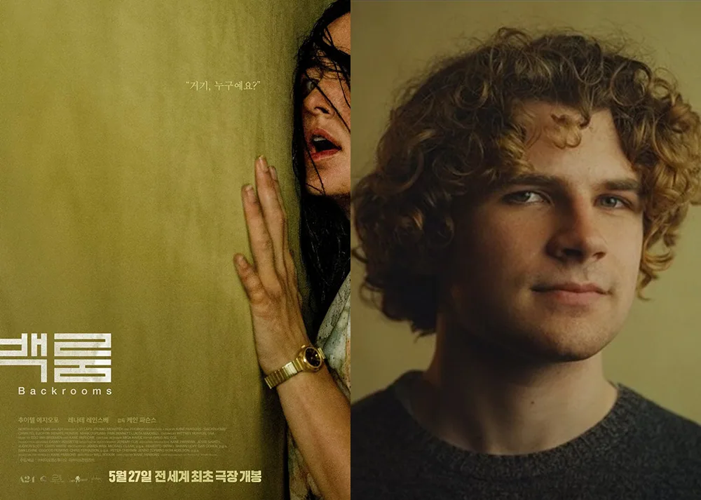
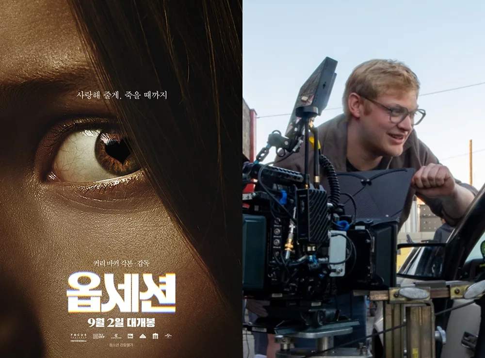
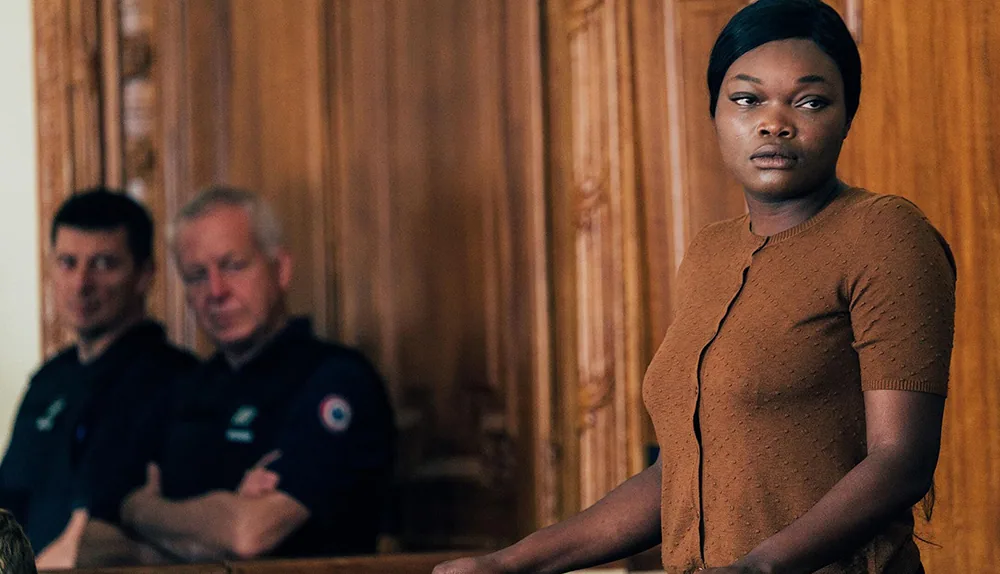
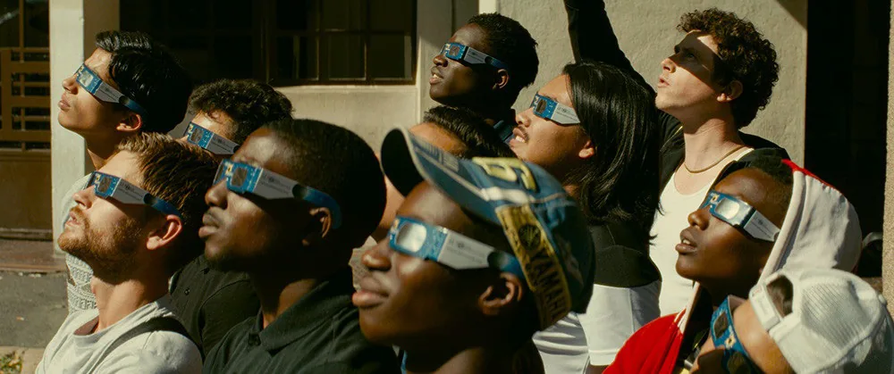

지난 9월 2일 국내 개봉한 할리우드 저예산 공포영화 <옵세션>은 전 세계 상영 중이며 글로벌 수익이 5억 달러에 달한다. 이 영화를 연출한 커리 바커 감독은 1999년생으로 이전에는 극장용 영화를 연출한 이력이 없다. 저예산 공포영화 <백룸>으로 지난 5월 북미 박스오피스 1위를 거머쥔 케인 파슨스 감독 역시 신인 감독으로 2005년생이다. 유튜브 크리에이터로 활동하다 처음 연출한 장편영화 <백룸>으로 제작비 30배에 달하는 4억 달러의 글로벌 수익을 거두며 흥행에 성공했다. 올해 1월 국내 개봉한 일본영화 <마이 선샤인>의 오쿠야마 요시유키 감독과 <나미비아의 사막>(2025)의 야마나카 요코 감독 등 일본영화의 2030 신진 감독들도 세계적인 주목을 받고 있다. 자국을 넘어 해외로 무대를 넓히는 신인 영화감독들의 사례는 영화 시장이 새로운 스타일을 찾고 있다는 의미로 읽힌다.
이 같은 흐름에 발맞춰 국내에서도 신인 감독의 출현을 위한 정책적 뒷받침이 필요하다는 목소리가 더 커지고 있다. 한국은 올 상반기 장편 데뷔작 <살목지>로 324만 관객을 동원한 이상민 감독의 존재가 눈에 띄지만, 국내 영화감독들의 연령대는 고령화 추세다. 전 세계 영화계뿐만 아니라 넷플릭스 같은 글로벌 온라인동영상서비스(OTT)마저도 각 지역의 특색이 묻어나는 신선한 로컬 오리지널 콘텐츠에 대한 강한 수요가 늘어나고 있는 상황이다. 영화를 비롯한 영상 콘텐츠 산업에서 주도권을 놓치지 않고 경쟁력을 확보하려면, 이 같은 산업 흐름에 대응해 신인 감독을 꾸준히 육성하고 시장에 내놓는 ‘인재 공급 정책’을 마련해야 한다.
그렇다면 세계 무대로 진출할 차세대 한국 감독은 어디서, 어떻게 육성되고 있을까? 영화진흥위원회(이하 영진위)를 중심으로 제작·배급 지원책이 마련돼 있지만 여전히 신인 감독이 첫 장편영화를 만들기까지 투자, 연출, 배급, 판매 등 전체 과정의 많은 부분을 개인의 역량과 운에 맡기는 경우가 많은 상황이다. 한국 영상 콘텐츠가 세계로 진출할 수 있는 문은 어느 때보다 넓어졌음에도 그 문을 통과할 차세대 감독은 지극히 소수인 게 현실이다. 동시대 해외 국가들이 신인 감독 육성을 국가적 과제로 삼고 과감한 제도를 시행 중이라는 사실은 그래서 중요하게 지켜볼 만하다. 그들의 육성 정책을 통해 우리 여건에 맞는 인재 전략을 모색해 볼 시간이다.


전 세계 흥행에 성공한 2005년생 <백룸> 케인 파슨스 감독(위)과 1999년생 <옵세션> 커리 바커 감독
(제공=바이포엠스튜디오, 리바이브콘텐츠, A24 인스타그램, 유니버설 픽쳐스)
영국영화협회(BFI) ‘디스커버리’, 신인 감독에게 3년간 최대 18억
‘BFI 국립복권기금 지원 계획 2026-2029(BFI National Lottery Funding Plan 2026-2029)’1)에 따르면 영국은 영화제작 펀드를 통해 올해부터 3년 동안 4천150만 파운드(한화 약 755억 원)를 사용한다. 이 돈에는 신인 감독의 장편 데뷔 전용 지원책인 ‘디스커버리(discovery)’ 예산도 포함돼 있다. 전액을 신인에 쓰는 것은 아니지만 첫 번째, 두 번째 장편 연출자를 위해 편당 최대 100만 파운드(한화 약 18억 원)라는 규모 있는 자금을 지원한다. 다만 BFI의 설명에 따르면 기금이 한정돼 있는 만큼 상한선을 100만 파운드로 하되 실제 수혜액은 50만~85만 파운드(약 9억~15억 원) 사이가 될 예정이다.
신인 감독이 장편영화를 기획·개발하는 초기 단계에서 드는 비용이나 단편영화 제작비를 지원하는 기금도 별도 배정됐다. BFI는 영화계에 인맥이 없는 완전한 신인 감독이나 비전공 창작자가 아이디어와 연출력을 보유하고 있을 경우 전문 프로듀서 없이도 지원사업의 혜택을 받을 수 있도록 한 ‘마이크로 숏 파일럿(Micro Short Pilot)’도 실험적으로 도입한다. 지원 금액을 대폭 확대하는 한편 지원 정책의 장벽은 낮추는 방식으로 신진 창작자를 발굴하겠다는 의지다.
프랑스 CNC, 신인 감독에게 ‘미리 주기’
프랑스 국립영화영상센터(CNC)의 가장 대표적인 지원제도인 ‘수익금 선급금(Avance sur Recettes, ASR)’은 말 그대로 ‘먼저 지급하는’ 형태로 감독에게 제작비를 대주는 것이다. 다만 무이자로 빌려주면서 흥행에 실패할 경우 갚지 않아도 되는 만큼 실상 대출이 아닌 지원금 형태에 가깝다. ASR을 기반으로 한 지원 중에는 ‘오직 첫 번째 장편영화’만을 위한 신인 전용 부문(Commission ASR1 - Projets de premiers films)도 존재하는데, 매년 지원을 받는 전체 장편 작품 중 통상 절반 수준을 신인 감독의 데뷔작에 사용한다는 점을 눈여겨볼 만하다. 신인 감독을 육성하는 일을 그만큼 비중 있게 생각한다는 의미다.
CNC는 자국 감독뿐만 아니라 전 세계의 신진 영화감독도 지원해오고 있다. 프랑스 문화원과 2012년부터 공동 운영하는 ‘세계 영화 지원’을 통해 연간 600만 유로(한화 약 93억 원)를 집행해왔고 그간 600편 넘는 장편영화를 지원했다. 눈에 띄는 건 해당 지원 역시 절반을 신인 감독의 데뷔작이나 두 번째 장편 전용으로 배분했다는 점이다. CNC에 따르면 지원을 받은 작품들은 칸국제영화제(153편), 베니스국제영화제(68편), 베를린국제영화제(64편), 로카르노국제영화제(26편) 등에 초청받았고, 100편이 미국 아카데미 시상식 국제장편영화상 부문 후보로 출품됐다.2) 영화산업을 국가적 경쟁력의 일환으로 보는 프랑스의 선도적인 지원책이다.
2) 프랑스 국립영화영상센터, https://www.cnc.fr/professionnels/communiques-de-presse/reforme-et-nouvelles-commissions-de-laide-aux-cinemas-du-monde_2111536
2)프랑스 국립영화영상센터, https://www.cnc.fr/professionnels/communiques-de-presse/reforme-et-nouvelles-commissions-de-laide-aux-cinemas-du-monde_2111536


2019년 CNC ASR 지원제도의 신인 전용 부문 선정작인 79회 베니스국제영화제 2관왕 <생토메르>(2022)(위)와
73회 칸국제영화제 공식 초청작 <가가린>(2022)(제공=서울국제여성영화제 홈페이지, 엣나인필름)
이탈리아, 정권 따라 신인 지원 예산 고무줄
이탈리아 영화·시청각총국(Direzione Generale Cinema e Audiovisivo, DGCA) 역시 첫 번째 및 두 번째 장편영화를 연출하는 신인 감독, 만 35세 이하인 청년 감독에 대한 지원을 두고 있다. 올해 지원금 교부 공모3)에 따르면 영화 제작을 위한 전체 지원금에 3천270만 유로(약 520억)를 배정했고 이 중 750만 유로(한화 약 117억 원)는 신인 감독의 첫 번째 및 두 번째 장편영화에, 780만 유로(한화 약 122억 원)는 만 35세 이하 청년 감독이 연출하는 장편영화에 배분한다. 부문당 20여 편을 선정한다.
다만 국립복권기금이 재원인 BFI나 영화관·방송사·OTT 등으로부터 거둔 부과금을 활용하는 CNC와 달리 이탈리아의 경우 국가 재정을 배분받는 구조라서 지원 정책의 안정성이 담보되지 않는다는 한계가 있다. 2022년 10월 조르자 멜로니 총리가 이끄는 우파 연합정부가 공식 출범한 뒤로 관련 예산은 지속해서 줄고 있다. 이탈리아의 정책통계 팩트체크 매체인 파젤라 폴리티카에 따르면 2022년 연간 7억 5천만 유로(한화 약 1조 1천697억 원)이던 지원 예산이 5년 만인 2027년 5억 유로(한화 약 7천798억 원)까지 무려 3분의 1 수준으로 줄어들 예정이다.4)
3) 이탈리아 영화·시청각총국, https://cinema.cultura.gov.it/avvisi/bando-per-la-concessione-di-contributi-selettivi-anno-2026/
4) 파젤라 폴리티카, https://pagellapolitica.it/articoli/governo-meloni-fondi-cinema 2026. 5. 11.
3) 이탈리아 영화·시청각총국, https://cinema.cultura.gov.it/avvisi/bando-per-la-concessione-di-contributi-selettivi-anno-2026/
4) 파젤라 폴리티카, https://pagellapolitica.it/articoli/governo-meloni-fondi-cinema 2026. 5. 11.
홍콩영화발전국, 현장 출신 신인 장편에 최대 14억
홍콩영화발전국(Hong Kong Film Development Council, HKFDC)은 ‘퍼스트 피처 필름 이니셔티브(First Feature Film Initiative, FFFI)’를 통해 신인 감독의 장편영화를 지원한다.5) 현장 스태프 출신 등 전문적 경험이 있는 신인 감독의 작품을 연간 최대 3편 선정해 편당 최대 800만 홍콩달러(약 14억 원)를 지급한다. 영화과를 졸업한 학생 출신 신인 감독의 작품도 연간 최대 3편 선정해 편당 최대 500만 홍콩달러(약 8억 7천만 원)를 대준다. 다만 선정 요건이 명확하다. 만 18세 이상의 홍콩 영주권자여야 하고, 10년간 3편 이상의 작품에 이름을 올린 이력이 있는 프로듀서가 있어야 한다. 규모 있는 지원을 하되 홍콩 정체성이 확실하고 실제 제작 역량까지 갖춘 팀에게 지원하겠단 뜻이다. 2020년 이후 정부 재원 때문에 공모 발표가 지연되면서 매년이 아닌 격년제 지원으로 굳어지는 양상이다.
2020년부터 ‘감독 스승제’를 운영하며 베테랑 감독이 신인 감독의 영화 완성을 돕는 멘토링 프로그램도 진행 중이다.6) 왕가위, 진가신 감독 등이 참여했으며 총 약 1억 홍콩달러(약 175억 원)의 예산으로 10여 편의 로컬 영화 제작을 지원한다. 각 영화에 약 900만 홍콩달러(약 15억 7천만 원)가 교부7)된다. 두 번째 장편 연출자나 중소 규모의 상업영화의 경우 민간 펀딩을 받을 수 있도록 지원한다. 정부가 지분 투자 형태로 최대 1천만 홍콩달러(약 17억 원)을 내고 민간 투자사를 연결해 주는 ‘필름 프로덕션 파이낸싱 스킴 2.0(Film Production Financing Scheme, FPFS 2.0)’ 제도다. 제작비 2천500만 홍콩달러(약 43억 원) 이하의 영화에 해당된다.8)
5) 홍콩영화발전국, https://www.fdc.gov.hk/en/applications_detail.php?id=2022042210252142851
6) 연합뉴스, https://www.yna.co.kr/view/AKR20260629126000005?input=1195m
7) 홍콩 특별행정구 정부 언론 공보 시스템, https://www.info.gov.hk/gia/general/202007/13/P2020071300574.htm
8) 홍콩영화발전국, https://www.fdc.gov.hk/en/whatson_detail.php?id=2025011415043011801
5) 홍콩영화발전국, https://www.fdc.gov.hk/en/applications_detail.php?id=2022042210252142851
6) 연합뉴스, https://www.yna.co.kr/view/AKR20260629126000005?input=1195m
7) 홍콩 특별행정구 정부 언론 공보 시스템, https://www.info.gov.hk/gia/general/202007/13/P2020071300574.htm
8) 홍콩영화발전국, https://www.fdc.gov.hk/en/whatson_detail.php?id=2025011415043011801
대만 문화부, 신인 장편 연출자에게 최대 10억 지원
대만 문화부 영시·유행음악산업국(Bureau of Audiovisual and Music Industry Development, BAMID)은 ‘국산 장편영화 제작 부도금’ 제도로 첫 번째 또는 두 번째 장편영화를 연출하는 신인 감독을 지원하고 있다. 당초 총제작비의 49% 이내에서 편당 최대 1천만 신대만달러(한화 약 4억 2천400만 원)의 무상 제작 보조금을 지원했고, 지난해 이 금액이 2천500만 신대만달러(한화 약 10억 6천100만 원)9)까지 늘어났다. 대만 문화부는 “부도금 중 신인 감독을 지원하는 비중은 50%~60% 이상에 달한다”10)며 신인 육성을 강조하고 있다. 한편 금마장 국제영화제 집행위원회가 2009년부터 운영해온 ‘금마영화학원’은 신인 감독의 단편영화 제작 워크숍을 이어오고 있다. 허우 샤오시엔, 이안 감독 등이 참여해 신인 감독을 직접 지도했던 이력이 있고, 금마장 영화제 기간에 완성된 단편영화를 상영한다.
9) 대만 행정원 공보, https://gazette.nat.gov.tw/EG_FileManager/eguploadpub/eg031096/ch05/type2/gov46/num16/Eg.htm
10) 대만 문화부 영시·유행음악산업국, https://www.bamid.gov.tw/News_Content.aspx?n=3482&s=261117
9) 대만 행정원 공보, https://gazette.nat.gov.tw/EG_FileManager/eguploadpub/eg031096/ch05/type2/gov46/num16/Eg.htm
10) 대만 문화부 영시·유행음악산업국, https://www.bamid.gov.tw/News_Content.aspx?n=3482&s=261117
일본무역진흥기구, 신진 영화인 할리우드 진출 집중 지원
일본은 경제산업성 산하 일본무역진흥기구(Japan External Trade Organization, JETRO)가 할리우드 내에서 아시아계 창작자의 시장 진입을 돕는 비영리단체 미국 아시아태평양 엔터테인먼트 연합(Coalition of Asian Pacifics in Entertainment, CAPE)과 손잡고 신인 감독을 직접 해외 시장에 노출시키는 ‘비욘드 재팬 필름메이커(Beyond JAPAN -FILMMAKER-)’라는 제도를 운영 중이다. 손해를 최소화하는 안정추구형 모델로 조직된 자국 제작위원회 시스템의 한계를 넘어, 가능성 있는 신인 감독과 제작자의 할리우드 진출을 보다 적극적으로 지원하려는 목적이다. 고레에다 히로카즈 감독이 선발위원회에 참여한 바 있으며 멘토링, 미국 현지 피칭, 할리우드 에이전트 및 쇼러너 미팅 등 전 과정이 영어로 진행되는 글로벌 진출 특화 트랙이다.
한국영화아카데미(KAFA)의 지원, 영진위의 신인 쿼터
국내에서는 한국영화아카데미(KAFA) 장편과정을 통해 신인 감독을 배출해왔다. 국적, 학력, 연령 제한이 없고, 외국인의 경우 한국어로 수업이 가능해야 했다. 대한민국 국적 남성의 경우 병역 필한 자, 혹은 면제자여야 했다. 이런 요건을 갖춘, 장편 연출 이력이 없는 신인 감독에게 편당 4억 원 내외의 제작비를 지원하고 촬영 카메라, 조명, 녹음 장비, 내부 사운드 믹싱·색보정실 등 KAFA가 보유한 기자재와 후반작업 시설을 무상 사용하게 했다. 올해 2월, 대상자로 2명을 선발했다.
오는 10월 6일부터 모집 공고 예정인 2027년 장편과정(21기)의 입학전형은 기존 완성된 시나리오를 중심으로 연구생을 선발하는 방식에서, 창작자의 독창적 시각 및 잠재력, 프로젝트의 발전 가능성, 연출과 프로듀서 협업 역량을 함께 고려하는 방식으로 전환한다. 이는 극장 중심에서 OTT 등으로 확장되는 제작·유통 환경의 변화, 생성형 AI 등 제작기술의 변화, 개발부터 협업·제작·시장 확장까지 창작자에게 요구되는 역량 변화에 따른 것이다. 연출 전공은 물론, 신설한 전형인 프로듀싱 전공 각 3명, 총 6명 내외 선발되며, 연출 전공의 경우에는 지원자의 영화적 관점과 창작적 독창성, 스토리와 캐릭터에 대한 이해, 시청각적 구현 능력 및 장편영화 연출자로서의 발전 가능성을 중심으로 평가한다.
영진위가 지난해 신설한 ‘중예산 한국영화 제작지원 사업’에도 신인 감독 육성책이 포함돼 있다. 코로나19 팬데믹 이후 한국영화 투자·제작이 위축되고, 특히 중간 규모의 상업영화 제작기반이 약화됐다는 판단 아래 도입된 사업이다. 올해 총사업비는 200억 원이며, 최종 지원 확정작 가운데 장편 연출 경력이 없거나 1편 이하인 신인 감독의 작품을 최소 30% 이상 포함하도록 했다. 순제작비의 40% 또는 25억 원 중 더 낮은 금액을 한도로 작품별 지원 금액을 결정한다. 다만 선정 이후 일정 기간 내 메인 투자·배급 계약을 체결하거나, 영진위 지원금을 제외한 총제작비 조달과 배급 계약을 확보해야 실제 지원이 확정되는 등 민간투자·배급과 연계된 조건을 두고 있다.
소재와 장르의 다양성 보장, 해외 펀딩 플랫폼 필요
해외 주요국들은 과감한 자금 투입과 글로벌 네트워킹으로 신예들의 활로를 뚫어주고 있다. 우리의 지원 정책과 자금도 작동하고 있지만, 국내 현장에서는 ‘소재와 장르의 다양성을 보장하는 지원책’, ‘해외 자본을 유치할 수 있는 펀딩 네트워킹과 플랫폼’이 절실하다는 이야기가 나온다. 데뷔작 <이장>(2019) 이후 두 번째 장편 <철들 무렵>을 지난 9월 16일 내놓은 정승오 감독은 “영진위 같은 중앙기관 지원에는 수백 편이 응모하는데, 10여 편 정도만 선택할 수밖에 없어서 경쟁률이 어마어마하다”면서 “현재로서는 중앙기관 외의 지역 기관 예산은 너무 적다. 정부가 지역 기관 예산을 더 확보해 주면 훨씬 더 풍부하고 다양한 이야기가 나오고 지역 기반 신인 감독·작가도 양성될 것“이라는 의견을 밝혔다.
김헌 한양대학교 미디어학과 조교수 역시 다양성을 보장하는 지원책이 필요하다고 말했다. 김헌 조교수는 “2000년대 중후반에는 소위 ‘센 영화’를 많이 지원했고 최근 10년 전후로는 ‘노동’, ‘여성’ 이야기가 트렌드가 돼서 지원을 받는 경우가 많아졌다”면서 “모두 좋고 필요한 이야기지만 한 쪽으로 치중되면 다양한 이야기를 품고 있는 신진 감독이 성장할 기회가 줄어든다”고 내다봤다. “코미디 등 장르적 다양성을 확보하는 지원책이 필요하다”는 취지다.
해외 펀딩을 위한 네트워킹 플랫폼이 필요하다는 의견도 여러 차례 나왔다. 정승오 감독은 “요즘 독립예술영화는 크라우드 펀딩이나 부가판권 선판매를 성공적으로 해내도 각각 3천만 원 정도 모을 수 있는 수준”이라면서 “영진위 지원은 상반기와 하반기 두 차례, 지역 영상위원회 지원 역시 상반기 한 차례다. 인맥이나 정보가 없는 신인 감독은 추가적으로 제작비를 충당할 수 있는 통로가 더 필요하다”고 말했다. “몇몇 영화제에서 비즈매칭 사업을 하지만 자기 작품이 초청되지도 않은 영화제에 감독이 나서기는 쉽지 않다”면서 “단번에 뭔가 성사되지 않아도 좋으니 ‘맨땅에 헤딩’을 하지 않도록 현실적으로 도움이 되는 해외 펀딩 미팅 등이 성사되는 플랫폼이 마련됐으면 좋겠다”고 전했다.
조근식 KAFA 원장 역시 펀딩 네트워킹 플랫폼의 필요성을 역설했다. “영화관을 중심으로 굴러가던 투자·제작·배급 생태계가 무너지고 나서부터는 OTT 시리즈든, AI 콘텐츠든, 숏폼이든 간에 해외 펀딩을 받아서 국제 공동제작을 하는 과정을 가르칠 필요가 있게 됐다”는 것이다. 조근식 원장은 “신인 감독들이 새로운 생태계에 대응해 나갈 수 있도록 어떻게 해외 펀딩을 받고 다국적 스태프를 꾸리는지, 해외 로케이션 촬영은 어떻게 가는지와 같은 실질적인 교육을 받아야 한다”면서 “이제는 바깥으로 눈을 돌릴 수밖에 없는 환경이 된 만큼 그런 방향의 정책적인 지원이 필요하다”고 전했다.
김헌 조교수는 이 과정에서 “지속 가능성이 있어야 한다”고 언급했다. “해외 현장에 있는 관계자를 통해 의견을 듣고, 우리 신진 감독들이 어떻게 글로벌 시장에 진출할 수 있을지에 대한 방안을 함께 ‘꾸준히’ 모색해줘야 한다”고 강조했다.